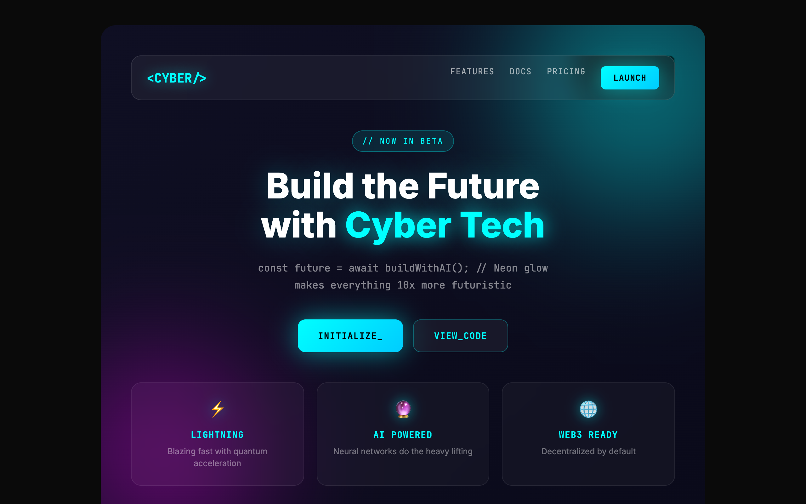
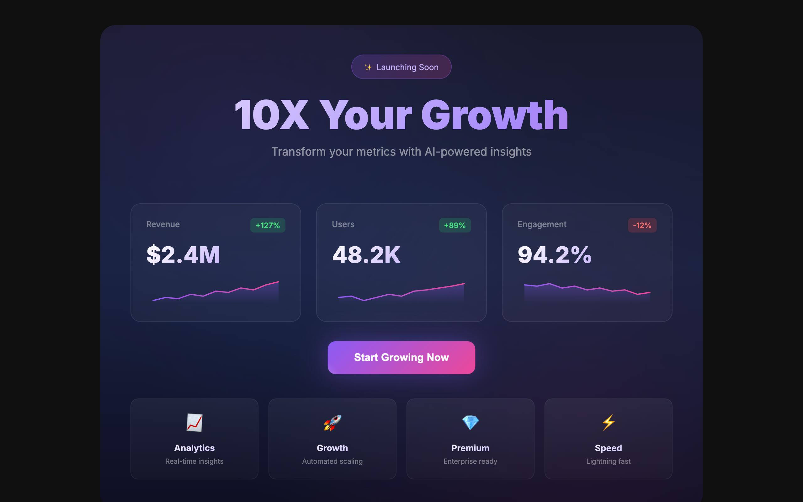
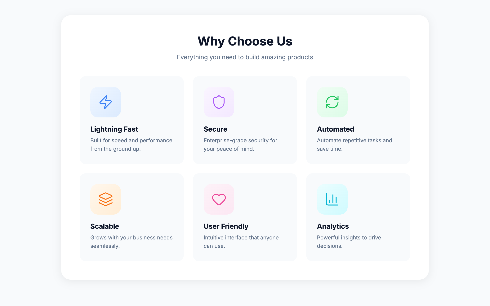
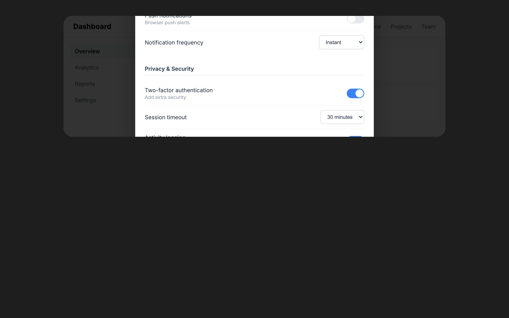

集成在 /critique 里
/critique
设计评审技能在浏览器检查阶段会自动打开覆盖层。你会一边看到确定性检测结果被直接标在页面上，一边让 LLM 独立完成它的启发式评审。
实时检测覆盖层
把每条反模式直接标在页面上看。你不需要再对着截图或 JSON 倒推具体位置；检测器会给命中的元素画出描边和标签，让你在原位就能判断、修改、复查。
悬停或点按任意被框出的元素，就能看到具体触发了哪条规则。
集成在 /critique 里
设计评审技能在浏览器检查阶段会自动打开覆盖层。你会一边看到确定性检测结果被直接标在页面上，一边让 LLM 独立完成它的启发式评审。
独立 CLI
npx impeccable live它会启动一个本地服务来提供检测脚本。把脚本通过 <script> 注入任意页面后，你就能看到覆盖层。无论是自己的开发环境、预发地址，还是线上页面，都能用。
最省事
任意标签页一键开启。前往 Chrome Web Store 安装 →
这 11 个合成示例页都已经内置检测脚本。点开任意一个，就能在真实页面结构上看到覆盖层运行，再滚动、悬停，看看哪些元素被框出来。

典型 AI 配色病：紫到蓝的渐变到处都是。按钮、文字、背景、光球，全都在用。像把“做得更炸”误解成唯一目标。

玻璃拟态、霓虹发光、模糊光球、整页 monospace。更像黑客马拉松 demo，不像真正要交付的产品。

拿不准就把一切都动起来：弹跳按钮、晃动图标、渐变文字、漂浮标签。只有动作，没有意义。

圆角卡片一侧加一条厚色边，这是 AI 生成 UI 最容易被一眼认出的信号之一。

卡片套卡片再套卡片，五层嵌套，每层都有自己的 padding 和阴影。

同一种 hero + 指标 + 功能区模板，换个颜色就再来一版。每个区块都长得一样，就没有任何重点了。

全站只用一套字体：标题、正文、标签、按钮都是它。没有排版层级，没有个性，也没有真正的设计判断。

图标容器比它引出的内容还大。当装饰比信息本身更抢眼时，优先级就倒过来了。

彩色背景上的灰字、低对比度标签、根本读不清的配色组合。好看和可读，本来不该互相冲突。
标签、副标题、帮助文案、提示文案都在用不同措辞重复同一件事。该说一次的内容，就别说四次。

把复杂设置硬塞进弹窗里。如果它需要滚动条和三列布局，那它就该拥有自己的一整页。